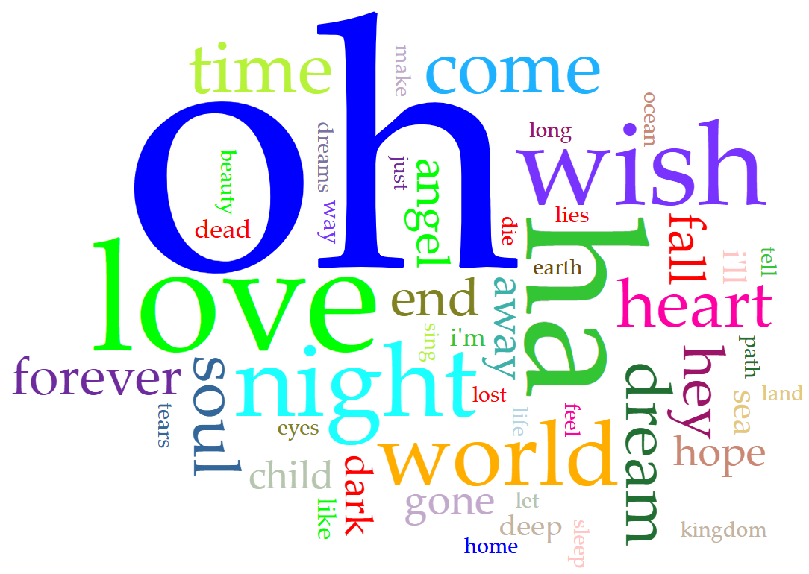
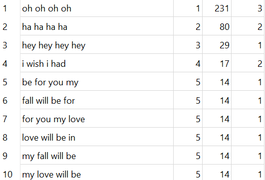
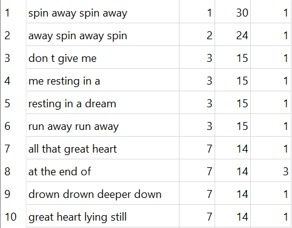
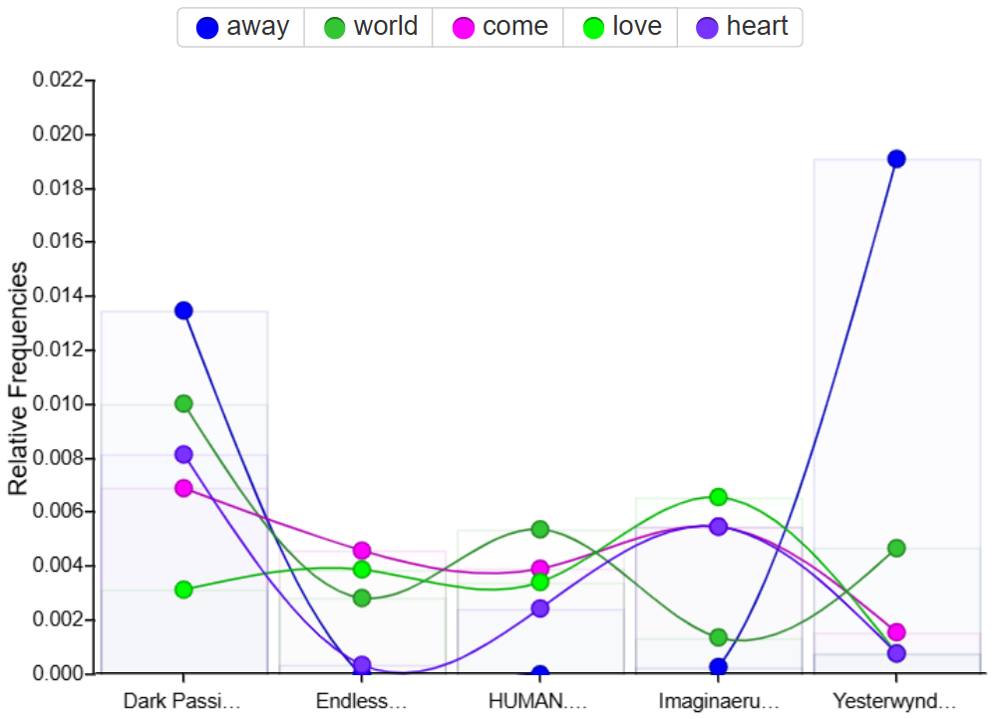

Nick Grundman's Very Professional Portfolio
Nick Grundman's Very Professional Portfolio
Nick Grundman's Very Professional Portfolio
Nick Grundman's Very Professional Portfolio



The worldcloud shows "oh," which is used often, but that is skewed by one song that features the word 140 times. Besides that, many emotion-filled and visually descriptive words like "night," "love," "wish," "world," "heart," "dream," and "soul" feature heavily.



Despite swapping singers 3 times, Nightwish has had only one primary songwriter: the band's founder and keyboardist Tuomas Holopainen. He has always held an outsized role in the songwriting process, as the band itself began and continues as his personal passion project. Tuomas has been a full-time musician since the formation of Nightwish in 1997, which supposedly took place "around a campfire". He has said his composing is inspired by harmonic film scores and can take up to a year to write songs for each album before collaborating with the rest of the band and asking for feedback. The band has been noted for its heavy guitar, strong instrumental sequences, and longer songs than many similar metal bands.
Tarja Turunen was the founding singer of the band, singing on its first 5 albums from 1997 to 2004. In 2005, though, during their largest tour yet for their newest album Once (2004), Tarja was fired via open letter. The letter accused her of "diva" behavior, distancing herself from the band, and focusing more on her solo career than the band, egged on by her husband and manager. Since leaving the band, she has thrived in her solo career, cultivating a devoted fanbase. Her style of music, symphonic rock/metal, is similar to Nightwish, and she has a similar classical opera singing background as Floor Jansen, the band's current singer.
Anette Olzon is a Swedish singer who was brought on after Tarja's dismissal, but she only stayed on for two albums. She was also dismissed during a tour, this time in 2012 after the release of Imaginaerum (2012). She got pregnant, hospitalized due to illness, and was unable to continue the tour. The band brought on Floor Jansen as a replacement vocalist for the tour rather than cancelling, and Anette was unhappy with this, fought with the band, and was fired (or quit... it's debated).
Floor Jansen is the current vocalist for Nightwish. She has now served as the primary singer for longer than either Tarja or Anette, and has sung on 3 albums. Floor is a classically trained opera singer, and her voice is pushed to its furthest extent in many of the songs Tuomas wrote for her. Her voice singing job was at 16 for the Dutch symphonic metal band After Forever, where she stayed from 1997 to 2009. She started her own solo career in 2022, but her style is more pop-rock than Nightwish or Tarja.
Marko Hietala served as the male co-singer and bassist in many songs from Century Child (2001) to Human Nature (2020), but has since departed the band due to health issues. His deep, booming voice punctuates many songs, and he is also credited in songwriting on several of the songs he sung on, such as "The Crow, The Owl, and the Dove" from Imaginaerum (2011). He is the only one other than Tuomas to receive a writing credit on any Nightwish song.
Because the only two men to ever write any creditable portion of the lyrics have been part of the band for almost its entire existence (Marko left before Yesterwynde, but was never a major force, and, since Yesterwynde is part of a "trilogy" along with Human Nature and Endless Forms Most Beautiful, the lyrical style is similar), almost all of the difference in style is due to the development in Tuomas' personal style and preference.
The earlier albums have less conversational and less wordy songs than the later albums. This is likely due to Tuomas feeling more comfortable making more operatic-feeling and symphonic songs rather than a classic metal sound as he gains more experience songwriting. Additionally, after 2014, when Floor Jansen joined Nightwish, Tuomas gained the ability to use the classically trained opera singer for his most fantastical lyrics yet.
You can clearly see certain songs' influence on the data with "oh" in the earlier dataset (almost entirely thanks to "Passion and the Opera" from Oceanborn (1998)) and "spin away" in the later one, which originates from "Spider Silk" from Yesterwynde (2024). Both songs have a long bridge with the same repeated lyrics.
Have you tried shutting the hell up?